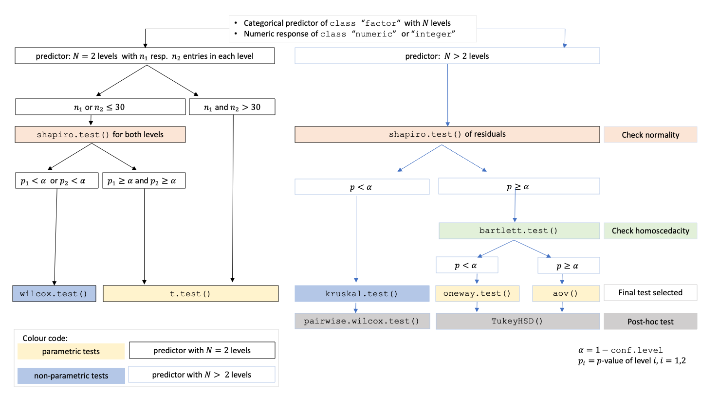

The R package visStatistics allows for rapid visualisation and statistical analysis of raw data. It automatically selects and visualises the most appropriate statistical hypothesis test between a response (varsample) and a feature (varfactor) within a data.frame. The package focuses on visualising the selected test using appropriate plots - such as box plots, bar charts, regression lines with confidence bands, mosaic plots, residual plots and Q–Q plots. Each plot is annotated with relevant test statistics and, where applicable, assumption checks and post-hoc results. The scripted workflow is particularly well suited for interactive interfaces, where users access data only through a graphical front end backed by server-side R sessions, as well as for quick data exploration, for example, in statistical consulting contexts.
Getting Started
A minimal function call looks of its main function visstat() looks like:
The input must be a column - based data.frame, and varsample and varfactor are character strings naming columns of that data frame.
The function selects a statistical test based on the class of the response and feature variables, the number of levels in categorical variables, and conditions such as normality and homoscedasticity.
The automatically generated output figures illustrate the selected statistical test, display the main test statistics, and include assumption checks and post hoc comparisons when applicable. The primary test results are returned as a list object.
Installation of the development version from GitHub
- Install devtools from CRAN if not already installed:
- Load the devtools package:
- Install the
visStatisticspackage from GitHub:
- Load the
visStatisticspackage:
- View help for the main function:
- Study all the details of the package in its vignette:
Decision logic
Throughout the remainder, data of class "numeric" or "integer" are referred as numerical, while data of class "factor" are referred to as categorical. The choice of statistical tests performed by the function visstat() depends on whether the data are numerical or categorical, the number of levels in the categorical variable, and the distribution of the data. The function prioritizes interpretable visual output and tests that remain valid under the the following decision logic:
- When the response is numerical and the predictor is categorical, a statistical hypothesis test of central tendencies is selected.
If the categorical predictor has exactly two levels, Welch’s t-test (
t.test()) is applied whenever both groups contain more than 30 observations, with the validity of the test supported by the approximate normality of the sampling distribution of the mean under the central limit theorem Lumley et al. (2002). For smaller samples, group - wise normality is assessed using the Shapiro - Wilk test (shapiro.test()) at the significance level α. If both groups are found to be approximately normally distributed according to the Shapiro - Wilk test, Welch’s t-test is applied; otherwise, the Wilcoxon rank-sum test (wilcox.test()) is used.For predictors with more than two levels, a model of Fisher’s one-way analysis of variables (ANOVA) (
aov()) is initially fitted. The normality of residuals is evaluated using both the Shapiro-Wilk test (shapiro.test()) and the Anderson-Darling test (ad.test()); residuals are considered approximately normal if at least one of the two tests yields a result exceeding the significance threshold α. If this condition is met, Bartlett’s test (bartlett.test()) is then used to assess homoscedasticity. When variances are homogeneous (p > α), Fisher’s one-way ANOVA (aov()) is applied with Tukey’s Honestly Significant Differences (HSD) (TukeyHSD()) for post-hoc comparison. If variances differ significantly (p ≤ α), Welch’s heteroscedastic one-way ANOVA (oneway.test()) is used, also followed by Tukey’s HSD. If residuals are not normally distributed according to both tests (p ≤ α), the Kruskal-Wallis test (kruskal.test()) is selected, followed by pairwise Wilcoxon tests (pairwise.wilcox.test()). A graphical overview of the decision logic used is provided in the figure below.

Decision tree used to select the appropriate statistical test for a categorical predictor and numerical response, based on the number of factor levels, normality, and homoscedasticity.
- When both the response and predictor are numerical, a simple linear regression model (
lm()) is fitted and analysed in detail, including residual diagnostics, formal tests, and the plotting of fitted values with confidence bands. Note that only one explanatory variable is allowed, as the function is designed for two-dimensional visualisation.
- In the case of two categorical variables,
visstat()tests the null hypothesis that the predictor and response variables are independent using either Pearson’s χ2-test (chisq.test()) or Fisher’s exact test (fisher.test()). The choice of test is based on Cochran’s rule (Cochran 1954), which advises that the χ2approximation is reliable only if no expected cell count is less than 1 and no more than 20 percent of cells have expected counts below 5.
Note: Except for the user - adjustable conf.level parameter, all statistical tests are applied using their default settings from the corresponding base R functions (e.g., t.test()). As a consequence, paired tests are not currently supported. Furthermore, since the main purpose of this package is to visualize statistical test results, only simple linear regression is implemented. For a more detailed description of the underlying decision logic see
Examples
In this section, function names in parentheses in the headings indicate the statistical test selected by the decision logic of visstat().
Numerical response and categorical feature
When the response is numerical and the feature is categorical, test of central tendencies are selected.
Welch’s t-test (t.test())


Wilcoxon rank-sum test (wilcox.test())
grades_gender <- data.frame(
sex = factor(rep(c("girl", "boy"), times = c(21, 23))),
grade = c(
19.3, 18.1, 15.2, 18.3, 7.9, 6.2, 19.4, 20.3, 9.3, 11.3,
18.2, 17.5, 10.2, 20.1, 13.3, 17.2, 15.1, 16.2, 17.0, 16.5, 5.1,
15.3, 17.1, 14.8, 15.4, 14.4, 7.5, 15.5, 6.0, 17.4, 7.3, 14.3,
13.5, 8.0, 19.5, 13.4, 17.9, 17.7, 16.4, 15.6, 17.3, 19.9, 4.4, 2.1
)
)
wilcoxon_statistics <- visstat(grades_gender, "grade", "sex")
Fisher’s one-way ANOVA (aov())
insect_sprays_tr <- InsectSprays
insect_sprays_tr$count_sqrt <- sqrt(InsectSprays$count)
visstat(insect_sprays_tr, "count_sqrt", "spray")


Kruskal–Wallis test (kruskal.test())

 The generated graphs can be saved in all available formats of the
The generated graphs can be saved in all available formats of the Cairo package. Here we save the graphical output of type “pdf” in the plotDirectory tempdir():


Categorical response and categorical feature
Pearson’s χ2-test (chisq.test())
Count datasets are often presented as multidimensional arrays, so - called contingency tables, whereas visstat() requires a data.frame with a column structure. Arrays can be transformed to this column wise structure with the helper function counts_to_cases():
hair_eye_color_df <- counts_to_cases(as.data.frame(HairEyeColor))
visstat(hair_eye_color_df, "Hair", "Eye")

Fisher’s exact test (fisher.test())
hair_eye_color_male <- HairEyeColor[, , 1]
# Slice out a 2 by 2 contingency table
black_brown_hazel_green_male <- hair_eye_color_male[1:2, 3:4]
# Transform to data frame
black_brown_hazel_green_male <- counts_to_cases(as.data.frame(black_brown_hazel_green_male))
# Fisher test
fisher_stats <- visstat(black_brown_hazel_green_male, "Hair", "Eye")

Implemented tests
Note that all test are implemented with their default settings, with the exception of the user-adjustable conf.level.
Numerical response and categorical feature
Main tests
t.test(), wilcox.test(), aov(), oneway.test(), kruskal.test()
Normality assumption check
shapiro.test() and ad.test()
Post-hoc tests
-
TukeyHSD()(used followingaov()andoneway.test()) -
pairwise.wilcox.test()(used followingkruskal.test())
Numerical response and numerical feature:
Simple linear regression: lm()
Note that multiple linear regression models are not implemented, as the package focuses on the visualisation of data, not model building.
Categorical response and categorical feature
-
chisq.test()(default for larger samples) -
fisher.test()(used for small expected cell counts based on Cochran’s rule (Cochran 1954))
References
Cochran, William G. 1954. “The Combination of Estimates from Different Experiments.” Biometrics 10 (1): 101. https://doi.org/10.2307/3001666.
Lumley, Thomas, Paula Diehr, Scott Emerson, and Lu Chen. 2002. “The Importance of the Normality Assumption in Large Public Health Data Sets.” Annual Review of Public Health 23: 151–69. https://doi.org/10.1146/annurev.publhealth.23.100901.140546.
Rasch, Dieter, Klaus D. Kubinger, and Karl Moder. 2011. “The Two-Sample t Test: Pre-Testing Its Assumptions Does Not Pay Off.” Statistical Papers 52 (1): 219–31. https://doi.org/10.1007/s00362-009-0224-x.